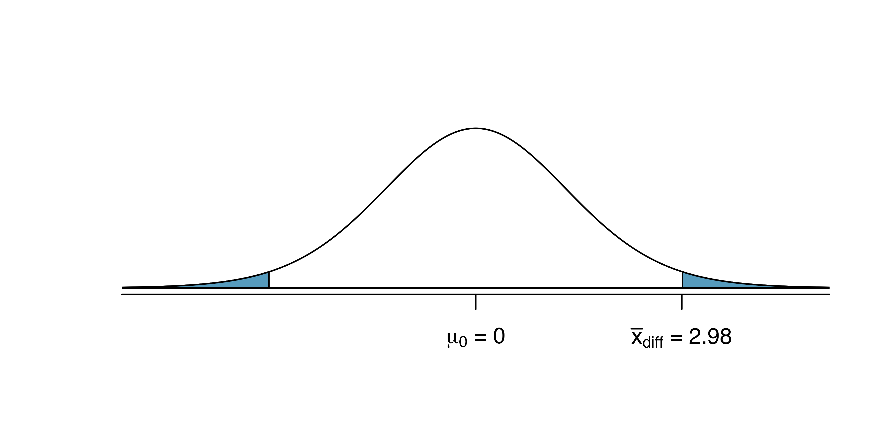
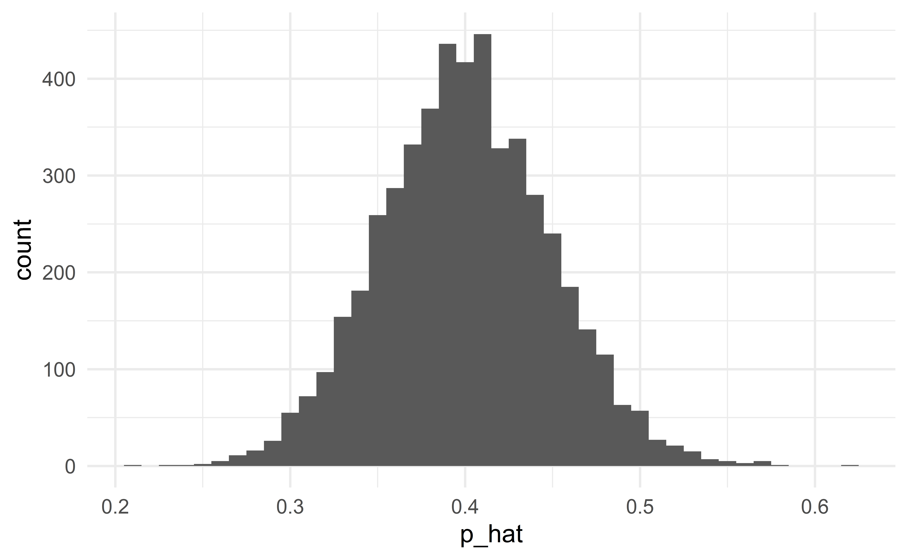
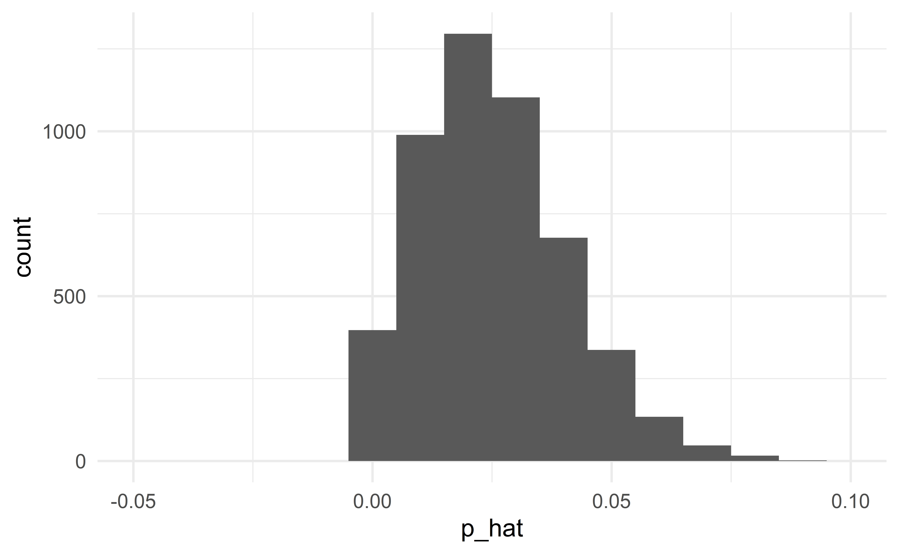

03:00
Classical inference
STA 101L - Summer I 2022
Raphael Morsomme
Welcome
Announcements
Tuesday: lecture
Wednesday: work on project
Thursday: work on project (3:30-5:00pm)
Friday: presentations
Recap
HT via simulation
CI via bootstrap
5 cases
one proprotion
two proportions
one mean
two means
linear regression
Outline
- Normal approximation
- Classical approach to statistical inference
- Standard error
Normal approximation
Normal distribution
\(\Rightarrow\) unimodal, symmetric, thin tails – bell-shaped
HT using a normal approximation
Source: IMS
CI using a normal approximation

Source: IMS
Normal approximation
The normal distribution describes the variability of the different statistics
\(\hat{p}\), \(\bar{x}\), \(\hat{\beta}\)
simply look at all the histograms we have constructed from simulated samples (HT) and bootstrap samples (CI)!
Classical approach: instead of simulating the sampling distribution via simulation (HT) or bootstrapping (CI), we approximate it with a normal distribution.
Normal approximation for \(\bar{x}\)
We have seen that if a numerical variable \(X\) is normally distributed
\[ X\sim N(\mu, \sigma^2) \]
then the sample average is also normally distributed
\[ \bar{x} \sim N\left(\mu, \frac{\sigma^2}{n}\right) \]
Condition for the normality of \(\bar{x}\)
In practice, we cannot assume that the variable \(X\) is exactly normally distributed.
But as long as
the sample is large, or
the variable is approximately normal: unimodal, roughly symmetric and no serious outlier
\(\bar{x}\) is well approximated by a normal distribution
\[ \bar{x} \sim N\left(\mu, \frac{\sigma^2}{n}\right) \]
See the numerous histograms for case 3 (one mean) where the distribution of \(\bar{x}\) always looks pretty normal.
Normal approximation for \(\hat{p}\)
If
the observations are independent – the independence condition
\(p\) is not extreme and \(n\) is not small \((pn\ge 10 \text{ and } (1-p)n\ge 10)\) – the success-failure condition
the distribution of \(\hat{p}\) can be approximated by a normal distribution
\[ \hat{p} \sim N\left(p, \frac{p(1-p)}{n}\right) \]
Success-failure condition for CI
For CI, we verify the success-failure condition using the sample proportion \(\hat{p}\):
\[ \hat{p}n\ge 10 \text{ and } (1-\hat{p})n\ge 10 \]
Conditions are satisfied
Normal approximation is good
When the conditions are satisfied
When the conditions are satisfied, the normal distribution will be a good approximation. The classical and modern (simulation, bootstrap) approaches to statistical inference will give the same results.
Conditions are not satisfied
Normal approximation fails
When conditions are not satisfied
When the conditions are not satisfied, the normal distribution will not be a good approximation to the sampling distribution. In this case, we should not use the classical approach to statistical inference, but instead use simulation (HT) or bootstrap (CI).
The classical approach to HT and CI
The classical approach
Step 1: we are interested in the distribution of the statistic under \(H_0\).
Modern approach: simulate from this distribution
Classical approach: approximate this distribution with a normal distribution
HT
Step 2: we want to compute the p-value
Modern approach: the p-value is the proportion of simulations with a statistic at least as extreme as that of the observed sample
Classical approach: the p-value is the area under the curve of the normal distribution that is at least as extreme as the observed statistic.
What R does
R will compute the p-value for you. Here is what R does behind the scene:
CI
Step 2: identify the upper and lower bounds of the CI
Modern approach: find the appropriate percentiles among the simulated values
Classical approach:find the appropriate percentiles of the normal approximation
What R does
R will compute the upper and lower bounds for you. Here is what R does behind the scene:
Case 1 – one proportion
n <- 1500 # sample size
x <- 780 # number of successes
prop.test(
x, n, # observed data
p = 0.5, # value in the null hypothesis
conf.level = 0.99 # confidence level for CI
)
1-sample proportions test with continuity correction
data: x out of n, null probability 0.5
X-squared = 2.3207, df = 1, p-value = 0.1277
alternative hypothesis: true p is not equal to 0.5
99 percent confidence interval:
0.4864251 0.5533970
sample estimates:
p
0.52 Comparison with simulation-based HT
The simulation-based HT yielded a p-value of 0.127.
A good normal approximation
When the conditions for the normal approximation are satisfied, the results based on simulations (modern) and the normal approximation (classical) will be similar.
Conditions: independence, success-failure condition
Individual exercise - the classical approach for one proportion
Suppose you interview 2000 US adults about their political preferences and 1200 of them say that they are democrat. What is the 95% confidence interval for \(p\), the proportion of US adults who are democrats? What is the length of the interval?
What 95% CI do you obtain if 6000 out of 10000 US adults say they are democrat? What is its length?
Exercise 16.19 – find the 95% CI. Are the conditions satisfied?
Exercise 16.21
Exercise 16.25
05:00
Case 2 – two proportions
Consider the gender discrimination study.
n_m <- 24; n_f <- 24 # sample sizes
x_m <- 14; x_f <- 21 # numbers of promotions
prop.test(c(x_m, x_f), c(n_m, n_f))
2-sample test for equality of proportions with continuity correction
data: c(x_m, x_f) out of c(n_m, n_f)
X-squared = 3.7978, df = 1, p-value = 0.05132
alternative hypothesis: two.sided
95 percent confidence interval:
-0.57084188 -0.01249145
sample estimates:
prop 1 prop 2
0.5833333 0.8750000 Conditions
Independence within groups (same as case 1)
Independence between groups
Success-failure condition for each group (10 successes and 10 failures in each group)
Comparison with simulation-based HT
Using the simulation-based HT, we found a p-value of 0.0435.
A good normal approximation
When the conditions for the normal approximation are not satisfied, the results based on simulations (modern) and the normal approximation (classical) may differ.
A simulation-based HT will always give exact results. A HT based on the normal distribution will only give the same (exact) results when the conditions are satisfied.
06:00
Case 3 – one mean
Conditions
Independence
Normality – can be relaxed for larger samples \((n\ge30)\)
Statistics as an art
The normality assumption is vague. The most important feature of the sample to verify is the presence of outliers.
Rule of thumb: if \(n<30\), there should not be any clear outlier; if \(n\ge30\), there should not be any extreme outlier.
Individual exercise - the classical approach for one mean
Make a histogram and a boxplot of the variable. Are the conditions satisfied?
Construct a 99% CI for hwy.
Hint: run the command help(t.test) to access the help file of the function t.test and see what parameter determines the confidence level.
03:00
Case 4 – two means
There are two implementation; which on is more convenient depends on the structure of the data.
Welch Two Sample t-test
data: hwy by year
t = -0.032864, df = 231.64, p-value = 0.9738
alternative hypothesis: true difference in means between group 1999 and group 2008 is not equal to 0
95 percent confidence interval:
-1.562854 1.511572
sample estimates:
mean in group 1999 mean in group 2008
23.42735 23.45299
Welch Two Sample t-test
data: d$cty and d$hwy
t = -13.755, df = 421.79, p-value < 2.2e-16
alternative hypothesis: true difference in means is not equal to 0
95 percent confidence interval:
-7.521683 -5.640710
sample estimates:
mean of x mean of y
16.85897 23.44017 Conditions
Independence within groups
Independence between groups
Normality in each group (same as case 3 – one mean)
Individual exercise - the classical approach for two means
What is the 99% CI for the difference in fuel efficiency on the highway and in the city? How long is this CI?
Are the conditions satisfied?
02:00
Case 4bis – paired means
Paired t-test
data: d$cty and d$hwy
t = -44.492, df = 233, p-value < 2.2e-16
alternative hypothesis: true difference in means is not equal to 0
95 percent confidence interval:
-6.872628 -6.289765
sample estimates:
mean of the differences
-6.581197 Conditions
Paired observations
Independence between pairs
Normality
Individual exercise - the classical approach for paired means
What is the 99% CI for the difference in fuel efficiency on the highway and in the city? How long is this CI?
Are the conditions satisfied?
02:00
Always pair the observations
If the data can paired, you should always do it! Pairing data yields an analysis that is more powerful:
narrower CI
smaller p-value
Case 5 – regression
# A tibble: 3 x 5
term estimate std.error statistic p.value
<chr> <dbl> <dbl> <dbl> <dbl>
1 (Intercept) 1.15 1.21 0.949 3.43e- 1
2 cty 1.33 0.0449 29.6 1.43e-80
3 displ -0.0343 0.148 -0.232 8.17e- 1\(H_0: \beta_1 = 0\) when displ is included in the model
\(H_a: \beta_1 \neq 0\) when displ is included in the model
\(H_0: \beta_2 = 0\) when cty is included in the model
\(H_a: \beta_2 \neq 0\) when cty is included in the model
d <- heart_transplant %>% mutate(survived_binary = survived == "alive")
m <- glm(survived_binary ~ age + transplant, family = "binomial", data = d)
tidy(m)# A tibble: 3 x 5
term estimate std.error statistic p.value
<chr> <dbl> <dbl> <dbl> <dbl>
1 (Intercept) 0.973 1.08 0.904 0.366
2 age -0.0763 0.0255 -2.99 0.00277
3 transplanttreatment 1.82 0.668 2.73 0.00635Conditions (LINE) – linear regression
Linearity
Independence
Normality
Equal variability (homoskedasticity)
\(\Rightarrow\) verify with a residual plot!
10:00
Data sets
Standard error
Standard error
Standard error (SE): standard deviation of the normal approximation
It measures the variability of the sample statistic.
\(SE(\hat{p})=\sqrt{\frac{p(1-p)}{n}}\)
\(SE(\hat{p}_{diff})=\sqrt{\frac{p_1(1-p_1)}{n_1}+\frac{p_2(1-p_2)}{n_2}}\)
\(SE(\bar{x}) = \sqrt{\frac{\sigma^2}{n}}\)
\(SE(\bar{x}_{diff}) = \sqrt{\frac{\sigma^2_1}{n_1}+\frac{\sigma^2_2}{n_2}}\)
\(SE(\hat{\beta})\) has a complicated form.
Note
Note the role of the sample size!
Larger samples have a smaller SE
Sample size matters
Large \(n\)
\(\Rightarrow\) small SE
\(\Rightarrow\) normal approximation with small sd
\(\Rightarrow\) normal approximation is more concentrated
\(\Rightarrow\) tighter CI and smaller p-values.
02:00
Recap
Recap
- Normal approximation
- Classical approach to statistical inference
- case 1 – one proportion
- case 2 – two proportions
- case 3 – one mean
- case 4 – two means
- case 4bis – paired means
- case 5 – regression
- Standard error